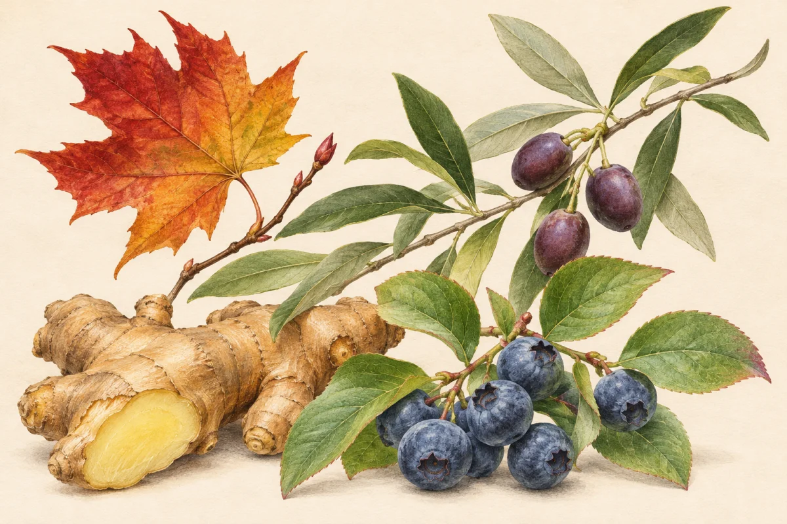

Open Food
Source.
Find recipes by ingredient, explore what human studies found, and plan the meals you want to repeat.

Pantry picker
Cook from your shelves.
Check the staples you have, then open a recipe to choose your version. Add what’s missing to your shopping list or put the meal straight into your week.
How we check sugar
Every recipe here uses unsweetened ingredients. Oats, beans and other whole foods can still contain naturally occurring sugars. The 0 g filter requires a USDA record listing 0 g total sugars per 100 g for every ingredient. Some values are assumed or rounded. Check your product’s ingredients and label.
FDA guide to added sugarsMy staples
Check what you have. Water and salt are assumed. Check amounts in the recipe.
No recipes match these choices.
My shopping list
Community cookbook
What can I cook?
Start with what’s in your kitchen. Choose a dish for the method, a swap and the research behind one of its foods.
Try fewer ingredients or clear a filter. You can also look up a food’s nutrients.
Search the food indexPlanning · Change week
Recipe collection
Cold-season kitchen.
Soft rice, brothy noodles and something warm to sip. Choose what sounds good today and add it to your week.
Meals by cooking time
Something to sip
The atlas
Map the evidence.
Select a study location to see which food researchers tested and what they measured.
Choose an outcome to trace it back to a food, the biology, and the evidence behind it.
At the stove
The tonic kitchen.
Choose an outcome to see the drinks researchers tested, how they compared, and a recipe for one glass or mug.
Plan this drink
Weekly planner
Your weekly food map.
Choose a food to see where it appears in your menu and what researchers learned about it. Edit this week’s meals
Each number counts meals or drinks mentioning a tracked food. Saved cookbook dishes and drinks include their listed ingredients. A dash means no match. Recipe alternatives can both appear.
This week’s meals
Open a day to change its suggested meals or drink. Edits update the map and save in this browser.
Food composition
Inside the pantry.
Search all 7,793 food records in USDA’s April 2018 SR Legacy collection. Choose a preparation and portion to see what it contributes.
Nutrient map
Each dot is a food record per 100 g. Select a dot or use the food search below.
One week in the kitchen
A goal you can taste.
At three breakfasts this week, pair a food you already eat with a plant food you enjoy. Try plain yogurt with berries and oats. On a rushed morning, add a handful of frozen berries.
Pick one drink from the tonic kitchen to try alongside a meal. At the end of the week, ask which combination tasted good, fit your day, and is worth repeating. Three breakfasts is a practical starting point. A week of trying a recipe cannot establish a change in inflammation or immunity.
Research notes
The source shelf.
Selected human trials, food composition tables, and guidance from public health agencies. Sources checked November 26, 2026.
How to read the evidence
A cardiovascular event is a clinical outcome. LDL cholesterol and blood pressure are risk markers. An attention task or symptom rating answers a narrower question. Nutrient content tells you what a food contributes. A plausible biological mechanism is a reason to test a claim.
This is a curated guide. We selected studies that speak to these foods, checked comparison groups and serving sizes, and included conflicting findings where they affect a kitchen decision. Study pins identify selected research settings, not where foods originated. Multi-site trials have one representative pin.
Browse sources
Contribute a study or recipe
Have a paper that changes a recipe, a correction to a finding, or a drink worth testing? Include the paper, what people consumed and what the researchers measured. For a family or regional dish, share the cooking method and credit its source. Anyone with a GitHub account can suggest a change.